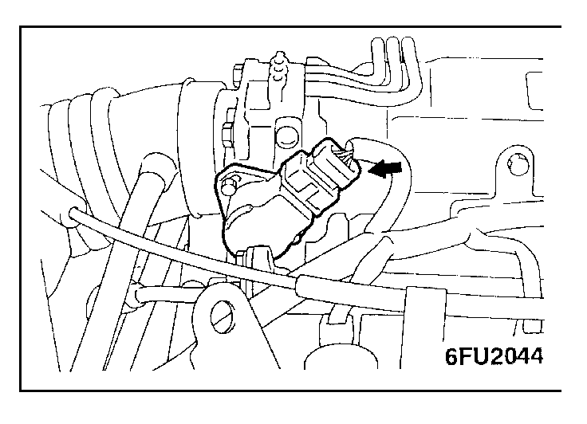
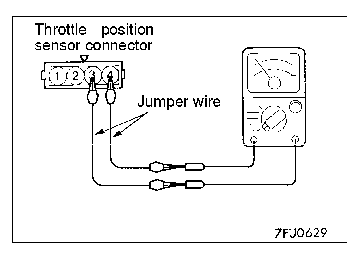
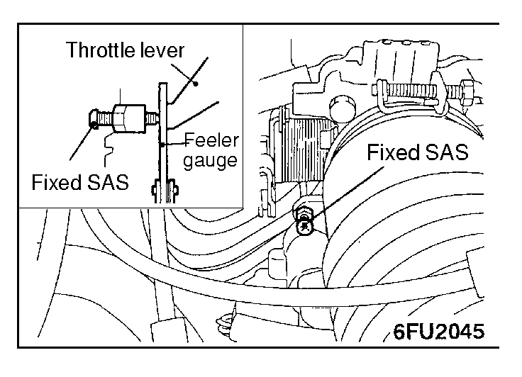
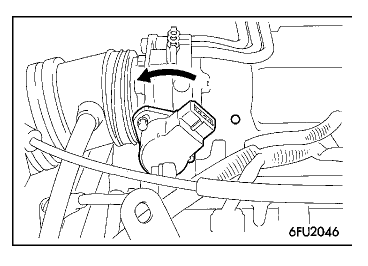
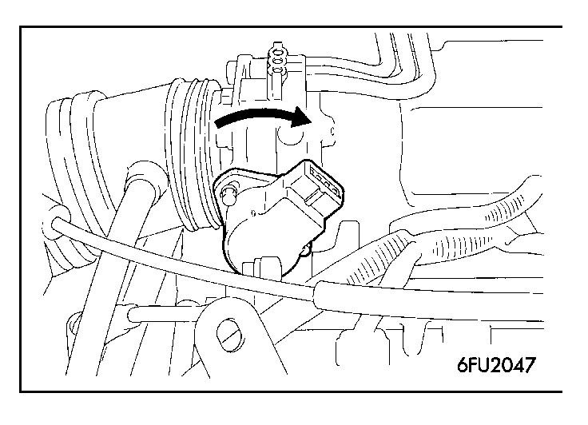
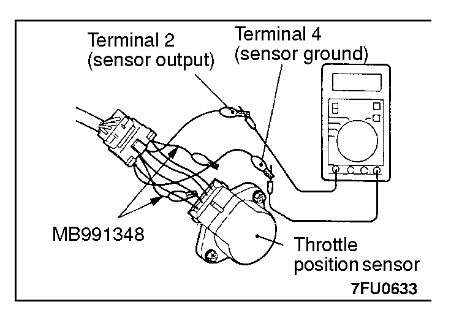

![[Previous]](https://mitsubishitechinfo.com/data/F24S/BUTTONS/fprevg.png)
![[Next]](https://mitsubishitechinfo.com/data/F24S/BUTTONS/fnextg.png)
     
CLOSED THROTTLE POSITION SWITCH AND THROTTLE POSITION SENSOR ADJUSTMENT
NOTE
When using the scan tool, proceed to service data item 26 and observe the ON/OFF changes to the closed throttle position switch instead of performing ohmmeter tests. If the scan tool is not available, follow the steps bellow.
1.Disconnect the connector of the throttle position sensor.
2.Connect an ohmmeter between terminal 3 (closed throttle position switch) and 4 (sensor ground) by using jumper wires.
3.Insert a feeler gauge with a thickness of 0.45 mm (.0177 in.) between the fixed SAS and the throttle lever.
4.Loosen the throttle position sensor mounting bolt; then turn the throttle position sensor body fully counter clockwise.
5.In this condition, check for continuity between terminals 3 and 4.
6.Slowly turn the throttle position sensor clockwise until the point at which continuity between terminals 3 and 4 changes to non-continuity is found.
Tighten the throttle position sensor installation bolt at that position.
7.Connect the connector of the throttle position sensor.
8.Connect the scan tool to the data link connector (16-pin).
9.When not using the scan tool, proceed as follows:
(1)Disconnect the throttle position sensor connectors and connect the special tool. Test harness set, between the disconnected connectors.
(2)Connect a digital voltmeter between the throttle position sensor terminal 2 (sensor output) and terminal 4 (sensor ground.)

10.Turn the ignition switch ON (but do not start the engine).
11.Check the throttle position sensor output voltage.
Standard value: 400 - 1,000 mV
12.If there is a deviation from the standard value, check the throttle position sensor and the related harness.
13.Remove the feeler gauge.
14.Switch OFF the ignition switch.